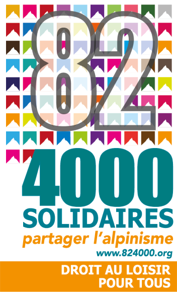
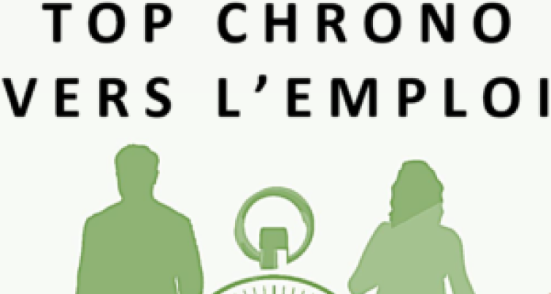

Nos actions
MEGA Social Foundation a vocation à favoriser l’émergence de programmes innovants, pertinents, efficaces et pérennes. Elle n’est pas un guichet de dons mais une partie prenante, une structure solide et pérenne sur laquelle nos partenaires peuvent s’appuyer pour gérer un projet complexe et transverse, développer des relations, discuter entre pairs, créer des coalitions, financer des projets.
Sans être une fondation opératrice, nous avons à cœur de participer pleinement au développement des programmes que nous soutenons, notamment en mettant nos compétences à la disposition des structures de l’intérêt général et en favorisant le transfert de compétence et de savoirs entre les organisations.
Nous travaillons actuellement avec des structures basées en Suisse et en France (partie Est uniquement) et qui agissent sur leur territoire local, dont elles ont une connaissance approfondie.
Programmes accompagnés
Démarche, société coopérative
Insertion socio-professionnelle de personnes très éloignées de l’emploi. Développement d’activités qui s’inscrivent dans l’économie circulaire, locale et durable.
Notre action: soutien à la gestion du projet de création d’une grande halle textile à Lausanne, recherche de partenaires industriels et associatifs, recherche de solutions locales et innovantes pour recycler le textile.
Association Lire et Écrire
Lutter contre l’illettrisme et la fracture numérique grâce à des formations, de l’accompagnement, des actions de plaidoyer et de la sensibilisation auprès du grand public.
Notre action : engagement financier avec la création d’un fonds d’urgence ; conseil dans la lutte contre la fracture numérique
82-4000 Solidaires
Droit aux loisirs pour tous! Redonner confiance aux plus précaires grâce au partage des plaisirs de la haute montagne et à la mixité sociale.
Notre action: rédaction de la charte d’essaimage, aide à la construction d’une fédération, aide à l’essaimage.
Top Chrono vers l’emploi
Insertion professionnelle de jeunes sans qualification et sans emploi. 6 structures de l’intérêt général réunies autour d’un programme inédit et novateur!
Notre action : co-création du programme d’accompagnement; aide à la coordination entre les structures.
Le programme s’est achevé en avril 2021.
Lutte contre l’illectronisme
MEGA Social Foundation est engagée pour lutter contre la fracture numérique et l’illectronisme, qui touchent toutes les tranches d’âge de la population et qui se répand au sein de la jeunesse.
L’illectronisme, c’est l’incapacité à utiliser des outils informatiques dans le cadre d’un usage professionnel ou administratif, que ce soit par un manque de matériel, de compétences ou de connaissances. En France, 3 Français.es sur 5 sont incapables de réaliser des démarches administratives en ligne (source: Rapport du Sénat, sept. 2020). En Suisse, 27% des plus de 15 ans ne possèdent pas les compétences numériques de base (source : OFS 2019).
Nous œuvrons pour la création d’une coalition incluant toutes les parties prenantes (structures de l’intérêt général, corporations publiques, entreprises, société civile) et dont l’objectif sera de détecter l’illectronisme, de fournir du matériel électronique et un service de maintenance, de proposer des cours ponctuels ou réguliers, de dédier des lieux d’accueil ouverts à toutes et à tous.
Nous aider : nous cherchons des partenaires intéressés pour rejoindre la coalition, nous avons besoin de matériel informatique et électronique, de bénévoles et de lieux pour former les personnes concernées.
Écologie et durabilité
MEGA Social Foundation s’engage pour un monde durable !
Nous croyons que les solidarités écologique et sociale vont de pair et que nous ne pouvons parler de solutions durables pour le monde que si elles préservent les humains autant que l’environnement.
La fondation est signataire du manifeste des fondations contre le dérèglement climatique et nous choisissons nos prestataires et fournisseurs de services en prenant en compte ces critères. Nous avons par exemple choisi d’héberger notre site, notre newsletter et nos emails chez Infomaniak, fournisseur de services suisse, local et engagé.
Nous sommes également engagés aux côtés de Démarche, société coopérative pour trouver des solutions locales, durables et sociales au problème des déchets textiles.